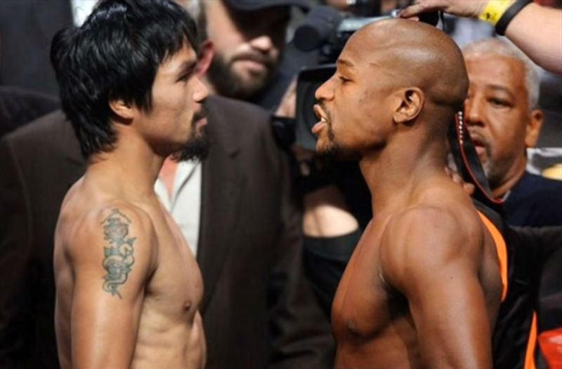
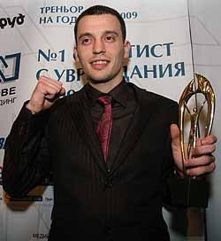
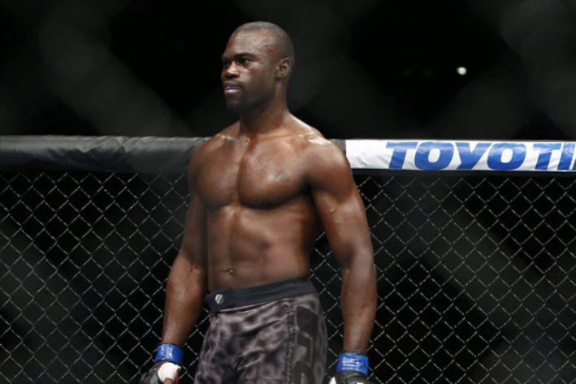
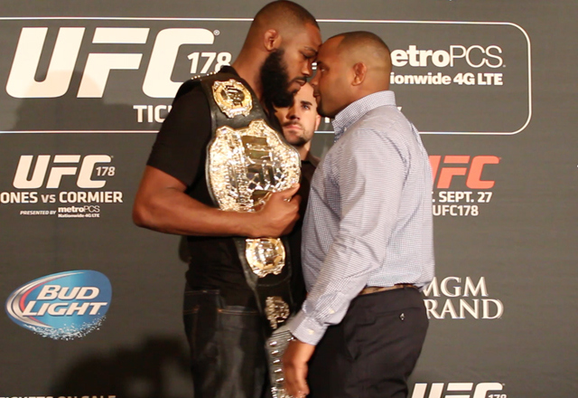
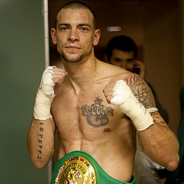
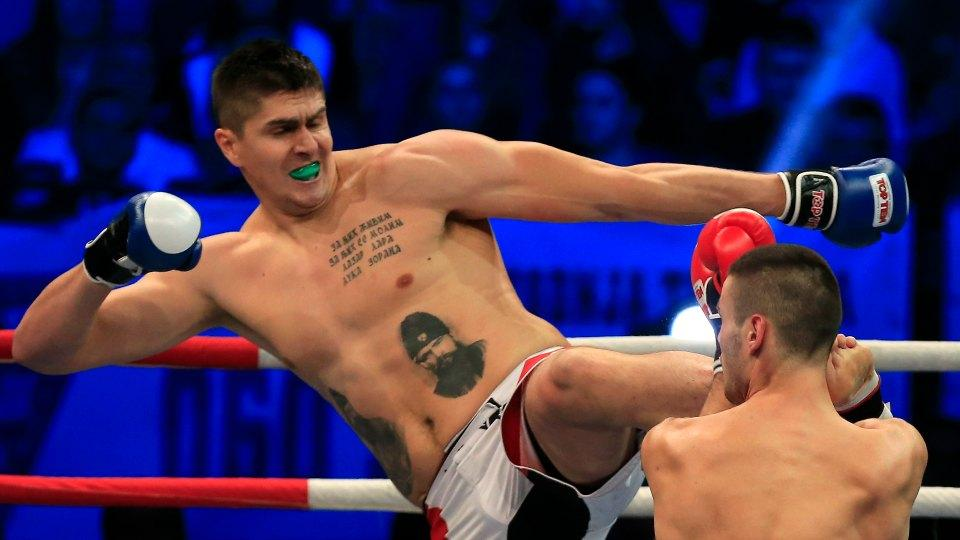

Мейуедър и Пакяо се доближиха до подписване

Някои от ключовите моменти, които по-рано бяха спънка за преговорите между Флойд Мейуедър и Мани Пакяо, са на път да бъдат изгладени.
Мейуедър срещу Пакяо може би ще бъде най-голямото боксово събитие в историята на този спорт.
Репортерът на вестник "L.A. Times", Ланс Пъгмир съобщава повече детайли:
"Мейуедър предложи приходите от двубоя да се разделят 60-40 в негова полза, а Пакяо изглежда е готов да се съгласи на това.
И двамата боксьори вече са дали съгласието си срещата да се проведе в MGM Grand Garden Arena в Лас Вегас и са се съгласили
на условията за допинг тестове. Все още обаче няма дата за срещата. Вярва се, че тя може да се проведе през май или юни.
Може би ще имаме подписан договор в близките 7-10 дена."
Далаклиев се завръща в националния

Световният шампион по бокс от 2009 г. Детелин Далаклиев се завърна в националния отбор, съобщава Sportal.bg. Плевенчанинът се качи на
лагер в Белмекен, където ще протече първата част от подготовката за новата година. През миналата година Далаклиев си беше дал почивка
от националния тим и бокса, а през декември се завърна на ринга и отвя конкуренцията на държавното първенство в Добрич.
Миналата година се появи и биографичната му книга "Никога не се предавай: Историята на Детелин Далаклиев". В края на януари предстои
републиканско в Пазарджик, а турнирът "Странджата" е следващото изпитание пред Далаклиев. Надпреварата ще се проведе в София през
февруари.
Основните цели пред националите през новата година са европейските игри в Баку, следва шампионатът на Стария континент в София през
август. Турнирът е квалификация за световното през октомври, на което ще се печелят визи за олимпийските игри в Рио.
Луйс Тейлър контузен и освободен от UFC

Миналата седмица Костас Филипо получи контузия преди двубоя си на 18 януари. Той бе заменен от Луйс Тейлър, който обаче вчера също
се е контузил и няма да може да излезе срещу Uriah Hall.
Но лошите новини за него не свършват до тук - UFC прекратиха договора с него още преди той да е стъпил в Октагона.
"Лоши новини... разтегнах мускул на гърба и няма да мога да се бия следващия уикенд. Бих искал да кажа, че от UFC са
проявили разбиране, но те ми прекратиха договора. Здравето обаче е по-важно от парите."
Джон Джоунс с победасрещу Даниел Кормиер

Шампионът на UFC в лека-тежка категория Джон Джоунс (САЩ) надви след съдийско решение Даниел Кормиер (САЩ) в един от най-чаканите
мачове през последните месеци. Шампионът доминираше с отличната си игра в стойка. Претендентът непрекъснато се опитваше да пренесе мача
на земя, но това не му се отдаваше.
"Той е просто човек. Изговори много неща, които ме мотивираха"
- заяви Джоунс. Кормиер се оправда с факта, че не е успял да намери своя ритъм. Той отдаде заслуженото на победителя:
"Джон не случайно е най-добрият. Той беше по-добрия тази вечер"
Тримата съдии точкуваха срещата 49:46. Това беше осмата успешна защита на Джоунс.
Джо Шилинг се завръща в кикбокса

Боецът в средната категория на Bellator, Джо Шилинг беше обещал, че ще участва в ММА и кикбокс двубои през 2015. Изглежда той
ще удържи на думата си, тъй като е подписал договор с Glory през изминалата седмица. Първият му двубой ще бъде срещу Робърт Томас
на 6 февруари в Glory 19.
Шилинг (18-6 кикбокс, 2-3 MMA) записа добро представяне в последния турнир на Glory, когато завърши на второ място. 11 от 18 победи на
Шилинг в кикбокса са с нокаут.
След 6 години извън ММА, Шилинг се завърна в клетката на 15 ноември в Bellator 131, когато се би с Мелвинг Маноев. Двамата направиха
изключително зрелищна битка, размениха си нокдауни, докато Шилинг не нацели Маноеф само както той си знае във втория рунд.
Далаклиев се завръща в националния

Една от най-големите надежди на европейския баскетбол през последните 15 години започна кариерата си в кикбокса с поражение. Дарко Миличич
издържа два рунда в първия си бой - срещу Радован Радойчин в Нови Сад, а причината за бързото приключване на двубоя бе контузия на
бившата баскет звезда.
213-сантиметровият исполин получи травма на големия пищял на крака и въпреки желанието си да продължи битката, докторите не му позволиха и така
победата отиде при Радойчин.
“Бих казал, че като за първи път не е зле. Приключихме по настояване на лекаря, иначе видяхте, че физически съм готов. Дано
контузията не е много сериозна. Ще бъда още по-добър в следващия си мач”
Миличич е играл 11 сезона в НБА, като за този период е заработил $52 милиона.